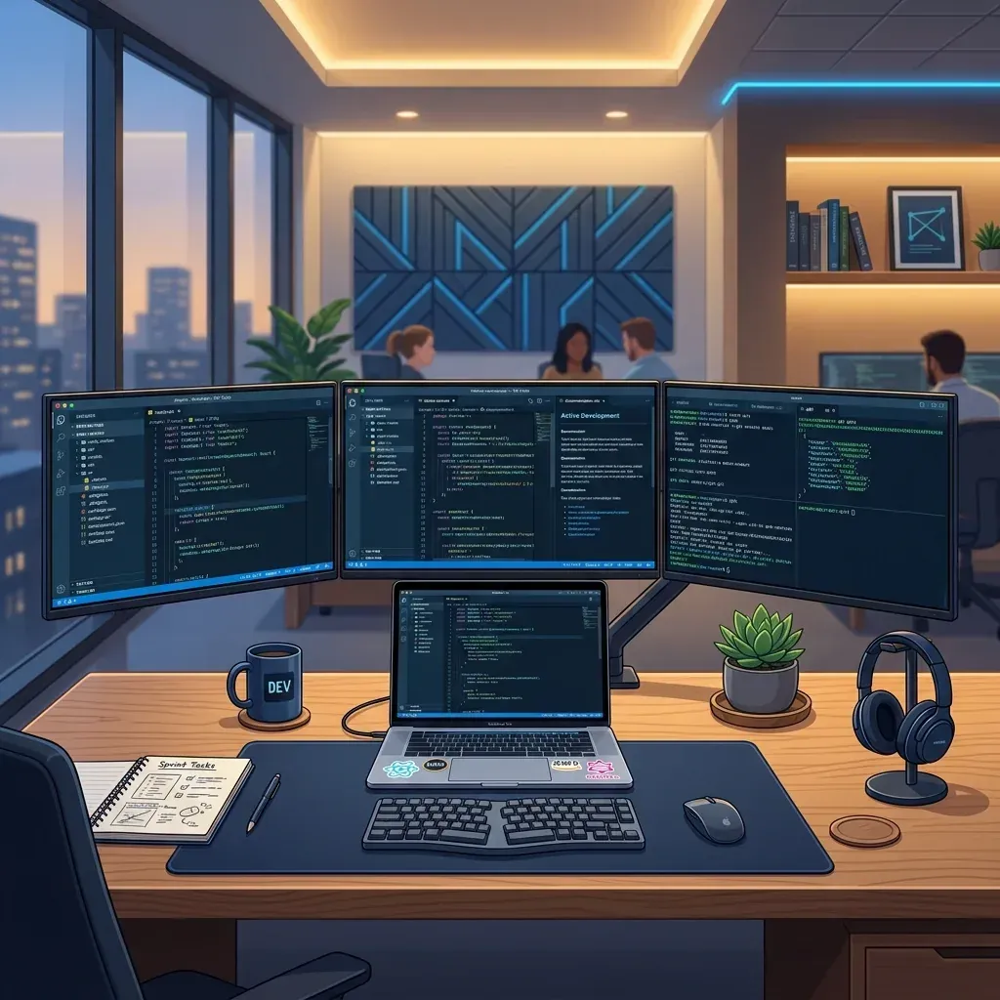

💻 Informatik-Lernen — Interaktiver IHK-Prüfungs- & Simulatoren-Hub💻 CS Learning Hub — Interactive IHK Exam & Simulators Lab

Umfassende interaktive Prüfungsvorbereitung und IT-Simulatoren-Hub für Fachinformatiker (AO 2020). Beinhaltet 25 praxisnahe Labore: DNSSEC Chain of Trust, Linux Btrfs/ZFS Copy-on-Write Sandbox, OpenAPI 3.1 Contract Testing, Agile Burndown & Gantt, eBPF Cilium Service Mesh, TLS 1.3 Anti-Replay und IHK-Wirtschaftlichkeitsrechner.
Comprehensive interactive exam prep and IT simulator suite for IT specialists. Features 25 hands-on labs: DNSSEC chain of trust validation, Linux Btrfs/ZFS Copy-on-Write sandbox, OpenAPI 3.1 contract testing, Agile Burndown & Gantt planners, eBPF Cilium network policies, TLS 1.3 replay defense, and IHK profitability calculators.